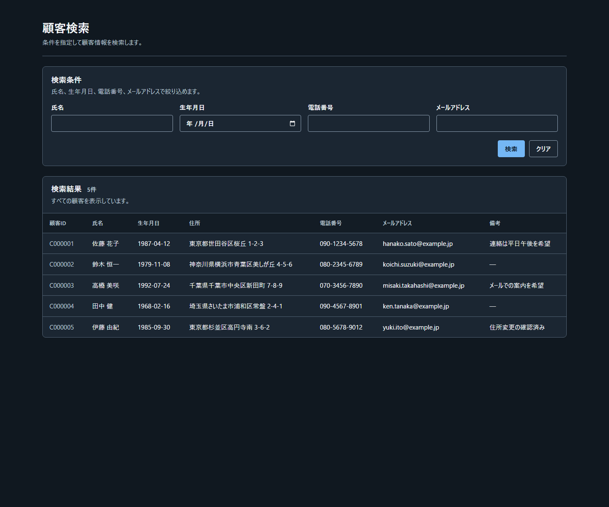
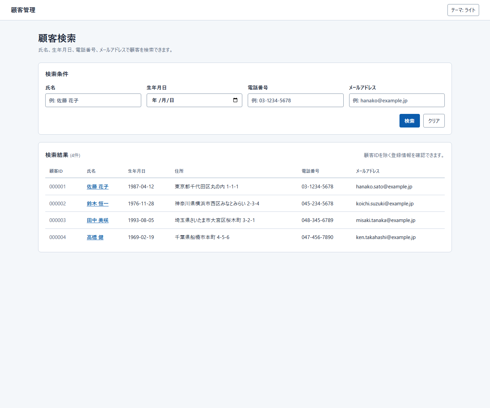
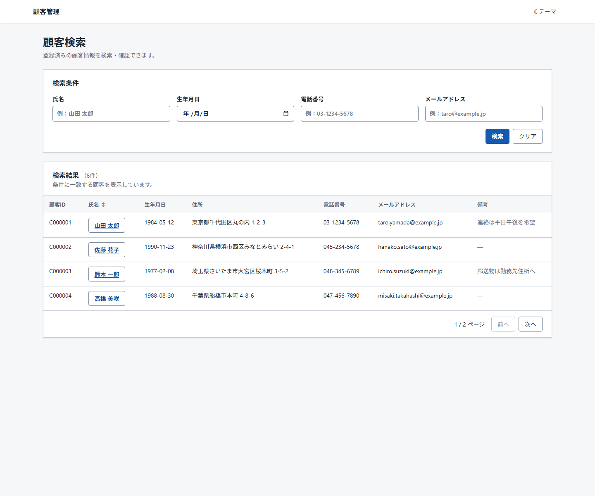

Run 1
Dark initial rendering · 5 results · no global Header

3件とも、同じmanifest snapshotと同じ日本語の顧客検索要件だけから新規に作成しました。過去の画面、PNG、比較結果、テスト、スキルは生成入力に含めていません。
比較対象は初期表示です。全Runで1440×1200、外部依存なし。ピクセル一致ではなく、manifestが固定した構造がどこまで揃うかを確認します。
Dark initial rendering · 5 results · no global Header

Light initial rendering · 4 results · theme control

Light initial rendering · paging and sort · theme control

| 観点 | 結果 |
|---|---|
| 揃った点 | 顧客検索、4検索条件、検索／クリア、顧客IDを含む管理項目、タイトル＋次行の説明、検索条件・検索結果の縦型見出し群、論理終端の検索操作群。 |
| 残った差 | Light/Dark初期状態、テーマ切替の有無、global Header、結果件数、ページング、ソート、詳細の提供方式、補助説明、fixture値。 |
| 重要な未解決点 | 利用者要件がテーマ選択・初期テーマ・ページング・ソート・詳細能力を供給していないのに、Runごとに補完された。これはproduct bindingなしの入力でmanifestがまだ十分に抑止できていない領域。 |